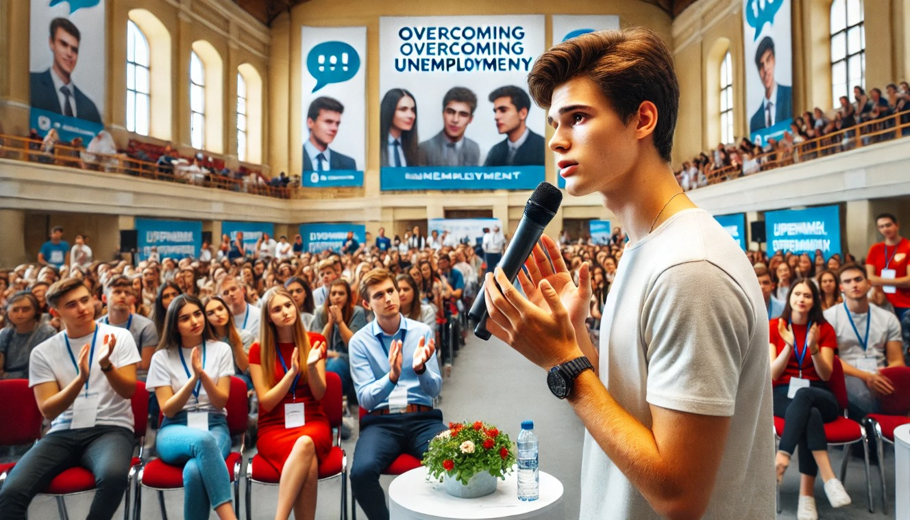

Семинарът за професионално развитие се проведе в голямата конферентна зала на центъра. Атмосферата беше оживена, изпълнена с енергията и надеждите на над тридесет млади хора, всеки от които носеше своите тревоги и копнежи за по-добро бъдеще. Александър и Мария бяха вложили много усилия в организацията, като се бяха погрижили за всеки детайл – от подбора на вдъхновяващи лектори до създаването на интерактивни дейности, които да помогнат на участниците да осъзнаят своите силни страни и да придобият практически умения. Те вярваха, че практическите упражнения и възможността за обмяна на опит са ключови за успеха на младите хора. Те бяха създали програма, която беше не само информативна, но и интерактивна и вдъхновяваща. Те бяха създали програма, която беше не само информативна, но и интерактивна, позволяваща на младите хора да участват активно и да се учат чрез преживяване. Даниел се настани в един от последните редове, все още леко дистанциран, но за първи път от много време изглеждаше заинтригуван. Той слушаше внимателно разказите на други млади хора, които споделяха своите лични истории за борба с безработицата и как с помощта на центъра са успели да намерят своя професионален път. Тези истории бяха изпълнени с искреност и надежда и докоснаха Даниел. Той виждаше, че не е сам в своята борба и че има хора, които са преминали през същото и са успели. Той започна да се идентифицира с техните преживявания и да вижда светлина в края на тунела. Когато дойде време за дискусията, Александър забеляза, че Даниел е по-активен от обикновено. Той задаваше въпроси и се включваше в разговорите. Александър се приближи до него и го попита с окуражителна усмивка: „Даниел, би ли искал да споделиш нещо? Може би твоята гледна точка за това как младите хора се справят с безработицата? Твоят опит може да бъде ценен за другите.“ Александър знаеше, че споделянето на личен опит може да бъде много силно и вдъхновяващо за останалите. Той вярваше, че уязвимостта може да бъде сила и че споделянето на трудности може да създаде връзка между хората. За изненада на всички, Даниел се поколеба само за миг, след което смело взе микрофона. Ръцете му леко трепереха, но гласът му беше твърд и решителен. „Не знам дали имам какво толкова да кажа…“ - започна той, но след това събра смелост и продължи. - "Бях в много лошо положение. Дълго време не можех да намеря работа, кандидатствах на много места, но все ме отхвърляха. Започнах да губя вяра в себе си, да се чувствам безполезен. Но този център ми даде надежда. Хората тук ме подкрепиха, повярваха в мен. Все още търся пътя си, но благодарение на хора като Александър и Мария осъзнавам, че не съм сам и че имам бъдеще." Залата избухна в аплодисменти. Думите на Даниел докоснаха сърцата на всички присъстващи. Те видяха в него не просто човек, който е преминал през трудности, а символ на надеждата и възможността за промяна. Неговата искреност и смелост вдъхновиха много от младите хора в залата. Те видяха, че е възможно да се преодолеят трудностите и да се намери път към по-добро бъдеще. След семинара Даниел беше преобразен. Той вече не беше затвореният и дистанциран младеж, когото Александър беше срещнал преди няколко седмици. Той беше по-отворен, по-уверен и по-общителен. Той започна да се включва активно в живота на центъра, да разговаря с другите младежи и да споделя своя опит. Той се превърна в своеобразен ментор за тях, доказвайки, че промяната е възможна. Той често разказваше за своите трудности и как е успял да ги преодолее, което даваше надежда на другите. Той стана пример за това как човек може да се издигне над обстоятелствата и да намери сили в себе си. Александър продължи да работи с Даниел индивидуално. Те провеждаха редовни срещи, на които обсъждаха неговите интереси, умения и кариерни цели. Александър му помогна да напише по-добро CV и мотивационно писмо, да се подготви за интервюта и да разшири мрежата си от контакти. Те работиха заедно върху неговите комуникационни умения и самочувствие. Александър виждаше как Даниел постепенно разцъфтява и се превръща в по-уверен и целеустремен човек. Даниел започна да посещава и други обучения и семинари, организирани от центъра. Той се интересуваше от курсове по предприемачество, комуникационни умения и управление на времето. Той осъзнаваше, че трябва да инвестира в себе си, за да постигне успех. Той започна да чете книги за личностно развитие и да търси възможности за обучение онлайн. Той беше решен да придобие нови знания и умения, които да му помогнат да намери работа и да изгради успешна кариера. Един ден Даниел изненада Александър, като му предложи да стане доброволец в центъра. „Искам да помогна на други млади хора, които са в моето положение. Знам какво е да се чувстваш безпомощен и отчаян. Искам да им дам надежда и да им покажа, че има изход.“ – каза той с ентусиазъм. В гласа му се долавяше силно желание да помогне на другите. Той искаше да върне жеста на добротата, който беше получил от центъра. Александър беше много щастлив от това предложение. Той знаеше, че опитът на Даниел ще бъде безценен за другите младежи. Даниел започна да помага на новодошлите, да ги ориентира в дейностите на центъра и да споделя собствената си история. Той се превърна в своеобразен ментор за тях, доказвайки, че промяната е възможна. Той стана пример за подражание и вдъхновение за много млади хора. Той им показваше, че не са сами в своята борба и че има надежда за по-добро бъдеще. Центърът организира обучение за кариерни консултанти и Даниел се записа. Той се оказа много добър в тази роля, защото имаше емпатия и разбиране към проблемите на младите хора. Той успя да помогне на няколко младежи да намерят работа или да продължат образованието си. Неговата лична история и преминати трудности му даваха уникална перспектива и способност да се свързва с другите. Той разбираше техните страхове и притеснения и знаеше как да ги мотивира да не се отказват.
